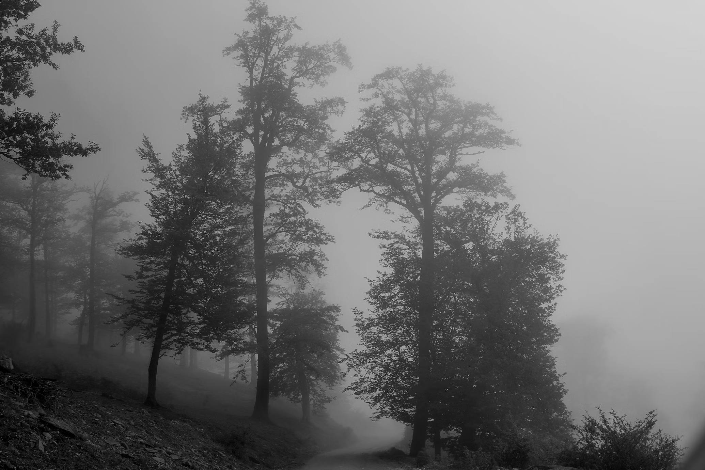
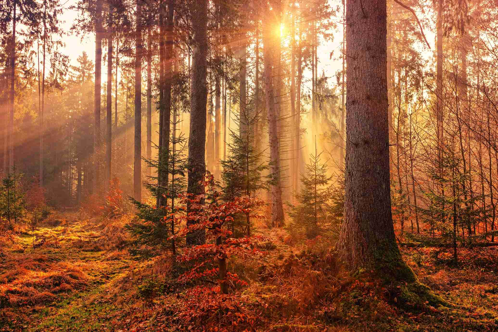
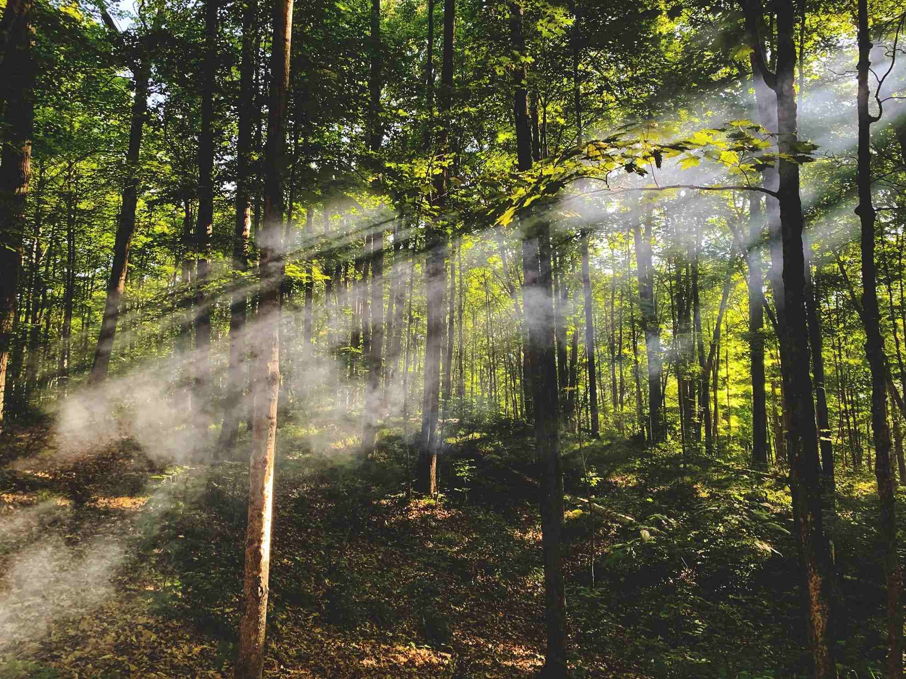

Whispers in the Mist
A silent morning cloaked in fog, where the forest becomes a dream.

Original
Sepia(1)
Photo by Mokhalad musavi - April 3, 2023
The Ember Woods
The forest ignites with the quiet fire of fall, fading into shadows.

Original
Saturate(0.5)
Photo by Johannes Plenio - April 14, 2018
A Breath of Light
Golden rays slip between the leaves, painting quiet hymns across the forest floor.

Original
Blur(2px)
Photo by Gary Meulemans - September 10, 2020